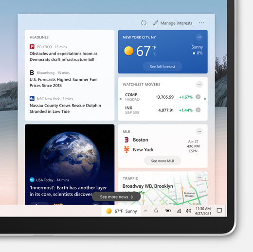
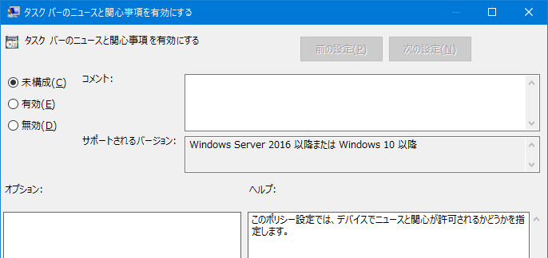

本記事はマイクロソフト社員によって公開されております。
こんにちは。Windows サポートの丸山です。
今回は、タスク バーに表示されるようになりました、”ニュースと関心事項” について、ご報告させていただきます。
2021 年 6 月の月例更新プログラム適用後に表示される [ニュースと関心事項] について
[ニュースと関心事項] は、アプリ、Web サイトを切り替えることを気にすることなく、パーソナライズされたコンテンツを提供する機能です。

本機能につきましては、Windows Insider Preview において 2021 年 1 月から利用可能となっておりましたが、2021 年 5 月のプレビュー以降の更新プログラムを適用いただくことより、すべてのユーザー様においてご利用可能となりました。
すべてのユーザー様にて “ニュースと関心事項” が利用可能となる Windows 10 のバージョン、および更新プログラムは以下の通りです。
■ Windows 10 バージョン 1909
2021 年 5 月 20 日 — KB5003212 (OS ビルド 18363.1593) プレビュー
https://support.microsoft.com/ja-jp/topic/05381524-8380-4b30-b783-e330cad3d4a1
※ KB5003212 以降の Windows 10 バージョン 1909 向け更新プログラムは、Enterprise、Education、IoT Enterprise エディションのみに適用可能となります。
■ Windows 10 バージョン 2004 および Windows 10 バージョン 20H2 および Windows 10 バージョン 21h1
2021 年 5 月 25 日 — KB5003214 (OS ビルド 19041.1023、19042.1023、および 19043.1023) プレビュー
https://support.microsoft.com/ja-jp/topic/8a58ac95-cf5e-4032-9272-23de9ee1d186
グループ ポリシーによる管理について
組織の管理者様におきましては、グループ ポリシーを用いることで “ニュースと関心事項” を管理することができます。
該当の更新プログラムが適用された環境におきましては、以下のグループ ポリシーをご利用いただくことをご検討ください。
パス : [コンピューターの構成] - [管理用テンプレート] - [Windows コンポーネント] - [ニュースと関心事項]
ポリシー : タスク バーのニュースと関心事項を有効にする
値 : 有効 (表示)、無効 (非表示)

ドメイン コントローラのグループ ポリシー管理機能を用いている場合など、お使いの端末にポリシーが表示されない場合には、以下の手順にてポリシーを追加する事が可能です。
- 以下のサイトから” Administrative Templates (.admx) for Windows 10 October 2020 Update (20H2) - v2.0” を “Download” してください。
Administrative Templates (.admx) for Windows 10 October 2020 Update (20H2) - v2.0
https://www.microsoft.com/en-us/download/details.aspx?id=103060
ダウンロードしたインストーラーをダブルクリックしてください。
“Next” を押してください。
“End-User License Agreement” をお読みいただき、同意いただけるようであれば “I accept the terms in the License Agreement” にチェックを付け、”Next” を押してください。
“Custom Setup” 画面にて、”Next” を押してください。
“Install” をクリック、”Finish” をクリックしてください。
Feeds.admx、Feeds.adml の 2 つのファイルをそれぞれを以下の場所に配置してください。
ファイル名 : Feeds.admx
ファイルが保存されている場所 : C:\Program Files (x86)\Microsoft Group Policy\Windows 10 October 2020 Update V2 (20H2)\PolicyDefinitions
ファイルを配置していただきたい場所 : C:\Windows\PolicyDefinitions
ファイル名 : Feeds.adml
ファイルが保存されている場所 : C:\Program Files (x86)\Microsoft Group Policy\Windows 10 October 2020 Update V2 (20H2)\PolicyDefinitions\ja-jp
ファイルを配置していただきたい場所 : C:\Windows\PolicyDefinitions\ja-JP
- グループ ポリシー管理エディター を開き、以下の階層にポリシーがある事を確認してください。
パス : [コンピューターの構成] - [ポリシー] - [管理用テンプレート] - [Windows コンポーネント] - [ニュースと関心事項]
[ニュースと関心事項] が表示されないパターンについて
弊社では、以下のパターンにおいて、6 月の更新プログラム適用後も [ニュースと関心事項] が表示されないことを確認しております。
1. タスク バーを左右、あるいは上部に配置している
タスク バーの位置が下部ではなく、左右、あるいは上部に配置しておりますと、[ニュースと関心事項] は表示されません。
2. [一時記憶された移動プロファイルのコピーを削除する] が [有効] になっている
移動プロファイルをお使いの環境において、[一時記憶された移動プロファイルのコピーを削除する] が [有効] になっておりますと、[ニュースと関心事項] は表示されません。
3. MSN の News Feed API にアクセスできない
[ニュースと関心事項] では、*.msn.com 配下のエンドポイントからニュース情報を取得しております。
お使いのネットワークにおいて、*.msn.com 配下のエンドポイントにアクセスできない場合には、[ニュースと関心事項] は表示されません。
[ニュースと関心事項] おおよそのトラフィック量について
[ニュースと関心事項] では、情報取得のために 30 分おきにおよそ 15KB 程度のデータの受信を行います。※本記事を投稿した時点における参考値となります。今後の更新プログラムやコンテンツによって通信量が変動する場合がございます。
なお、ユーザー設定、あるいはポリシーにより [ニュースと関心事項] が [無効] である場合にも、ユーザーがログオンし、インターネットに接続されております場合には、バックグラウンドでのデータの受信が行われております。
以上の情報が、Windows をご利用いただく皆様の一助になりますと幸いです。
関連記事
最新のニュースや関心事項を常に把握する
https://support.microsoft.com/ja-jp/windows/a39baa08-7488-4169-9ed8-577238f46f8f
Personalized content at a glance: Introducing news and interests on the Windows 10 taskbar | Windows Experience Blog
https://blogs.windows.com/windowsexperience/2021/04/22/personalized-content-at-a-glance-introducing-news-and-interests-on-the-windows-10-taskbar/
Announcing Windows 10 Insider Preview Build 21286 | Windows Insider Blog
https://blogs.windows.com/windows-insider/2021/01/06/announcing-windows-10-insider-preview-build-21286/
Group configuration: news and interests on the Windows taskbar - Microsoft Tech Community
https://techcommunity.microsoft.com/t5/windows-it-pro-blog/group-configuration-news-and-interests-on-the-windows-taskbar/ba-p/2281005
本情報の内容 (添付文書、リンク先などを含む) は、作成日時点でのものであり、予告なく変更される場合があります。
更新履歴
2021-07-29 おおよそのトラフィック量について追記
2021-07-12 [ニュースと関心事項] が表示されないパターンについて追記
2021-06-10 初版公開